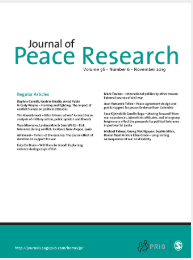
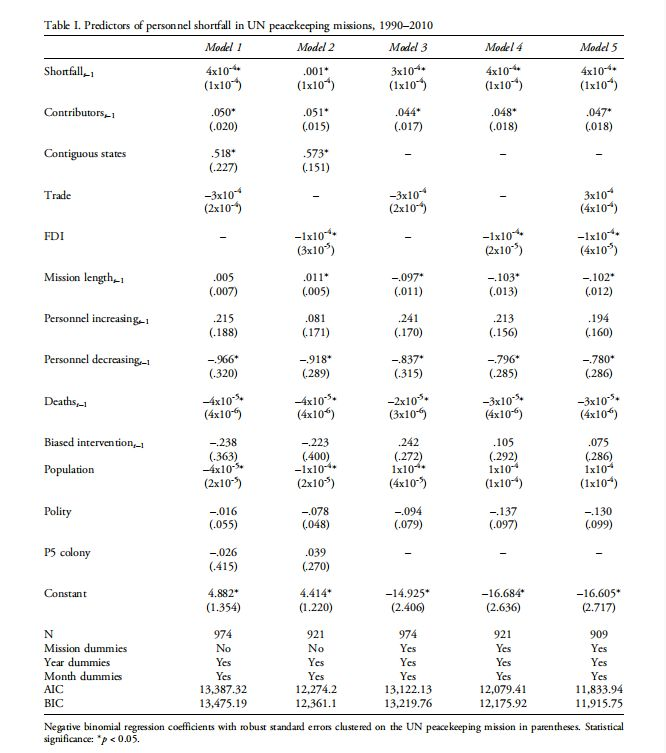
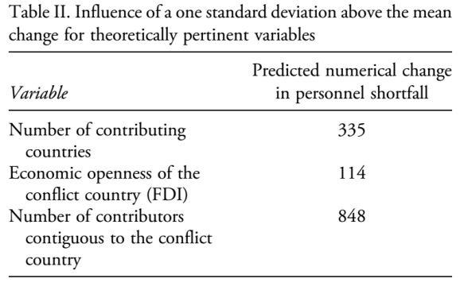

收录于合集

作品简介
【作者】
Timothy JA Passmore；Megan Shannon（科罗拉多大学波德分校政治科学系）；Andrew F Hart（凯尼恩学院政治科学系）
【编译】 邢戎（国政学人编译员，国防大学）
【审核】 兰星辰
【排版】 杨洋
【来源】 ****Timothy JA Passmore & Megan Shannon,Andrew F
Hart.(2018).Rallying the troops: Collective action and self-interest in UN
peacekeeping contributions. Journal of Peace Research , 55 (3),366379.
https://doi.org/10.1177/0022343317731152.
期刊介绍

Journal of Peace Research《和平研究期刊》是一份由奥斯陆和平研究所(PRIO)出版的跨学科同行评议期刊。在过去的十年里，它经常被列为国际关系和政治科学中被引用最多的十大期刊之一。2018年，该期刊影响因子在国际关系类SSCI期刊中位列13/91。
集结部队： 联合国维和行动派遣国的集体行动与一己私利
Rallying the troops: Collective action and self-interest in UN peacekeeping contributions
摘要
联合国维和特派团的人员招募是否易受各成员国搭便车行为的影响？若是，这一行为的驱动因素是什么，又会对特派团招募所需人才产生怎样的影响？本文运用了1990至2010年间驻在13个非洲国家的21个特派团的数据，探究维和行动人员短缺现象是否受到人员派遣国搭便车行为的驱动。研究表明，一个维和行动的人员派遣国数量越多，各国的搭便车现象就越普遍，并且更倾向于提供次优的人才输送方案，这导致特派团人员短缺状况进一步恶化。但这一现象可以通过经济刺激予以缓解。这一发现至少对集体行动理论提供了两个重要信条：人员派遣国越多，搭便车心理越普遍；人员派遣国获得的经济补贴等选择性刺激越少，搭便车现象越普遍。这一发现对维和部队的战略组成与效能产生启示，并揭示了国际组织在实现目标的过程中要获得成员国配合是异常艰难的。
内容提要
为什么联合国维和行动总是面临人员短缺情况？1990年以来，维和特派团平均每月面临21.6%的人员缺额。 鉴于 联合国正在推动由“维持和平”（peacekeeping）向更为强势的“强制和平”（peace enforcement）的转变，弄明白人力资源短缺的原因就显得至关重要。 ****尽管已有少量研究致力于发现导致人员短缺的因素，但相关的实证研究很少。
文章导读
一 、 联合国维和行动的人员短缺问题 ****
2000年，联合国发布重要报告《卜拉希米报告》，阐述了维和行动面临的困境。其中写道：“成员国 拒绝 部署成建制部队参与联合国领导的维和行动的情况远远多于 同意 部署。”在刚果（金）部署的维和行动就面临着人员短缺的严峻挑战。该任务始于1999年，但直到2002年才有一小支乌拉圭警卫部队到位，到2003年多国部队才部署完成，来应对广泛肆虐的暴力事件。这体现出联合国维和行动的普遍困境：难以获得、甚至根本无法获得足够的人员来完成任务授权。 1990 年以来，与任务授权所规定的人数相比，维和特派团平均每月面临21.6%的人员缺额。 而组成维和特派团的三类人员（军事人员、警务人员和民事人员）在缺额问题上无一幸免。
二、作为集体行动问题的维和人员短缺状况 ****
大卫·休谟认为：在解决集体问题时，人们会倾向于让自己免于麻烦和代价，而将这一负担留给别人承担。奥尔森进而认为：即使有共同利益，理性和利己的行为者并不愿努力去实现共同期望的目标，因为他们想依赖别人去付出努力。 这种享受集体之利而不愿承担集体之力的行为被称为搭便车现象，或者说集体行动问题。
联合国维和行动会受到搭便车现象影响，因为它提供非竞争性、非排他性的 “纯”公共安全产品。但同时，它也提供“不纯”的公共安全产品，因为某些受益方得到的好处比其他收益方要多，这些独享的特殊利益有助于人员派遣国克服搭便车心理，更愿意贡献力量。
那么，维和行动带来的公共的和私享的利益分别是什么？ 为国际体系带来安全稳定是最显著的公共利益。 一些国家内部冲突常常引发跨边境的安全问题，产生的溢出效应对邻国乃至利益相关国造成严重的经济、安全隐患。国内冲突中的暴力行为也会增加国际安全风险，尤其是当国内政治体制崩塌时，人口和毒品贩卖等犯罪活动以及恐怖主义将广泛肆虐，危害人权甚至引发大规模屠杀。
至于私享利益， 当存在值得保护的特殊国家利益时，一些国家更愿意派遣人员。 从经贸利益角度看，受冲突波及的国家通常会为维和人员派遣国提供特殊的贸易和投资机会，这对利益相关国颇具吸引力。从安全角度看，当一国认为邻国的暴力冲突极有可能影响本国安全态势时，它会倾向于派遣维和人员以达到未雨绸缪、防患未然的目的。此外还有一种私享利益，即联合国提供的人员补贴。联合国向出兵国支付每人每月1028美元的补贴，数额很低但却已是许多发展中国家的重要收入。同时，联合国提供的额外训练和武器装备也能在日后用于提升本国军事实力。由此而来的结果是，训练水平较差的穷国弱国更愿意派遣维和人员，而训练、装备水平较好的发达国家则由于机会成本太高而不愿派遣。
那么这与搭便车现象有什么联系？派遣国将权衡提供集体安全产品与获得私享利益孰轻孰重。如果一个维和行动的派遣国数量增多，某国获得的私享利益就将被稀释，从而影响派遣积极性。那么：
H1 ：人员派遣国数量越多，维和行动人员短缺状况越严重。
虽然人员补贴是国家收入来源，但并不是主要驱动因素，何况这一补贴标准自2002年起就没有变过。而经济贸易与投资利益能够显著削弱搭便车现象的驱动因素。那么：
H 2 ：人员派遣国 在驻在国有更大的贸易利益时 ，维和行动人员短缺状况 会得以缓解 。
H 3 ：人员派遣国在 驻在国 有 更 大的 投资 利益时，维和行动人员短缺状况 会得以缓解 。
再进一步，即使存在经贸投资利益，相关国家也许仍然觉得激励其他国家来派遣人员对自己更为有利，通过政治杠杆或者私下激励的方式能够替代派遣维和人员来发挥保护利益的目的。有学者认为，与冲突地带地理上的邻近性是国家派遣维和人员的强劲动力。那么：
H4a ：驻在国的邻国越多，人员短缺状况越能得到缓解。
更进一步，在这些邻国当中，或许仍然会出现搭便车现象。也有可能其他国家会认为邻国更有动力派遣维和人员从而产生作壁上观的心态。那么：
H4 b ： 驻在国 的邻国越多，人员短缺状况越 严重 。
**
**
三、 研究设计 ****
为了检验假设，我们选取1990-2010年间在13个非洲国家内展开的21项联合国维和行动，样本量占这一时期所有维和行动的38%，数据均以月份计量。
因变量： 人员缺额数 ，用以衡量维和行动人员短缺状况。我们根据安理会决议的授权人数减去实际部署人数来获取每年每月的维和人员缺额数。
自变量： 人员派遣国数 （为检验H1）； 贸易量和外国直接投资 （为检验H2,H3）； 邻国数 （为检验H4）。
为了排除任务困难程度等其他因素对研究的干扰，本文设置控制变量如下： 任务持续时间； 授权人数的增减变动； 一定时期内平民和战斗人员死亡人数； 第三方干预。 以及三个年度数据： 驻在国的人口； 驻在国的政体；驻在国是否为联合国安理会成员国的前殖民地。
**
**
四、 研究结果

检验H1：
在模型1和2中，正如预期的那样，人员派遣国的数量与人员短缺数呈现统计意义上的显著正相关。但这一结果未考虑固定效应模型，模型3和4做了进一步优化，并将贸易和投资变量相互替换。模型5则同时包括贸易和投资变量。在这些模型中，“人员派遣国数”变量的系数略有变化，但仍表现出统计意义上的显著性。因此，结果表明，随着派遣国数量的增加，联合国维和任务的人员短缺水平也在增加。使用泊松固定效应回归模型来进行稳健性检验，结果和基准模型保持一致。假设1得以证实。
我们使用模型5来检验派遣国数量对维和人员短缺的实质性影响，所有自变量均取平均值。表二显示，派遣国数目的平均数每改变一个标准差，就会造成大约335人的人员短缺。从人数占比上看，这会对维和行动产生令人担忧实质性影响。

检验H2：
在模型1、3、5中，“贸易”变量统计意义上并不显著，假设2未被证实。
检验H3：
在模型2中，“外国直接投资”变量显示负相关性和统计意义上较高的显著性。假设3得以证实。
那么，既然贸易和投资都是影响国际行为的重要驱动因素，为什么投资利益与维和人员短缺有关联，而贸易却不相关？本文认为，这两项经济指标的统计检验之所以出现差异，是由于在战乱国的投资包含了沉没的有形资产，（派遣国为保护这一部分资产而更愿意参与维和行动），而遭受贸易损失的国家可以通过增加与其他国家的贸易来弥补损失，从而减少了参与维和行动的动机。
检验H4：
在模型1和2中，我们发现邻国数系数呈现显著的正相关性，证实了假设4。我们还发现，当邻国数从3个增加到5个，联合国维和人员缺额增加了约848人。较大的增幅表明这一因素具有巨大影响。
在控制变量当中，有两点值得注意：1、任务期较长的特派团人员短缺状况较轻，这表明随着维和任务不断推进，联合国能够逐渐召集到足够的人员。2、一定时期内平民和战斗人员死亡人数越多的任务区人员缺额越少，这表明在暴力冲突形势最为严峻的地方，联合国更能发挥出积极作用，召集足够的人员来应对局势的复杂变化。
五、 结 论
通过探索搭便车现象对人员派遣国的影响，本文揭示了维和行动人员短缺问题的驱动因素。一个应对之策是让 更少 的人员派遣国派遣 更多 的人员。如果联合国能够确保少量装备优良的国家有足够动力派遣人员参与维和行动，将为其带来更多声誉上和经济上的利益，从而抑制其搭便车心理。另一种良方虽是老生常谈，但提供了通过改变体制性激励因素来抑制搭便车现象的可能性。联合国应当考虑 增加维和人员的经济报酬 ，这不仅能鼓励现有的人员派遣国，更能吸引发达国家那些训练有素的军、警、民事人员参与维和行动。提高维和能力是缓和地区冲突、展现联合国作用的关键一招。 尽管搭便车现象广泛存在于人类社会的角角落落，但这绝不是联合国必须屈从的命运。
_ ** _ ** _ ** _ 本文由国政学人独家编译推荐，文章观点不代表本平台观点，转载请联系授权。**__ 扫下方二维码查看往期精彩
【政策评论】信誉之后：川普时代的美国外交政策丨国政学人 第301期
【霸权研究】大国竞争战略中的经济遏制丨国政学人
第302期
【新刊速递】第12期 | International Affairs, Vol.95, No.6，2019
【新刊速递】第13期|Chinese Journal of International Politics, No.4, 2019
【新刊速递】第14期|Chinese Journal of International Politics, No.3, 2019
【新刊速递】第15期 | International Organization, No.4, 2019
分类导览 1
分类导览 2

点“在看”给我一朵小黄花